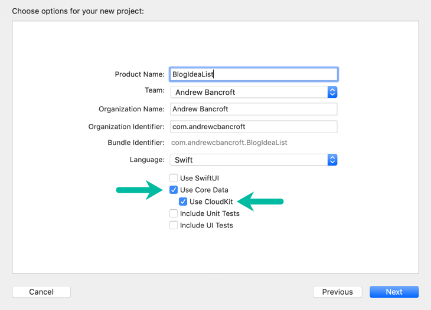
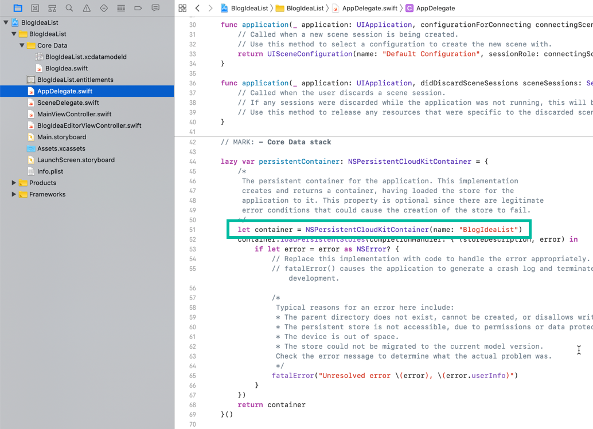
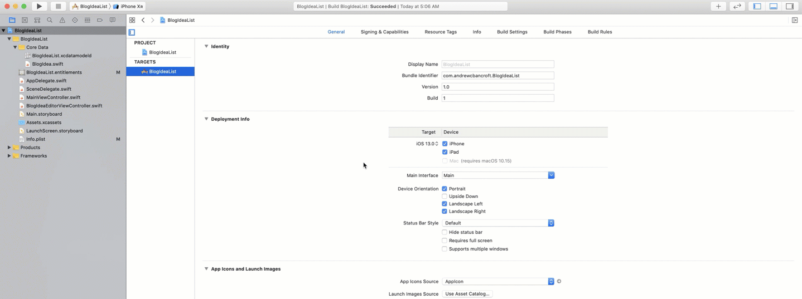
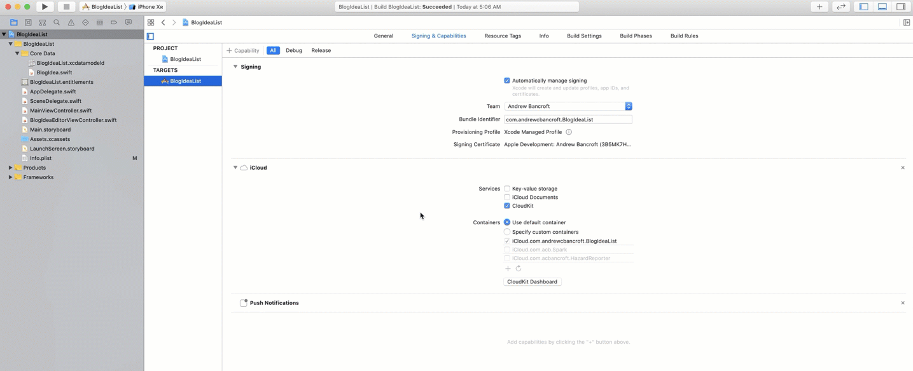
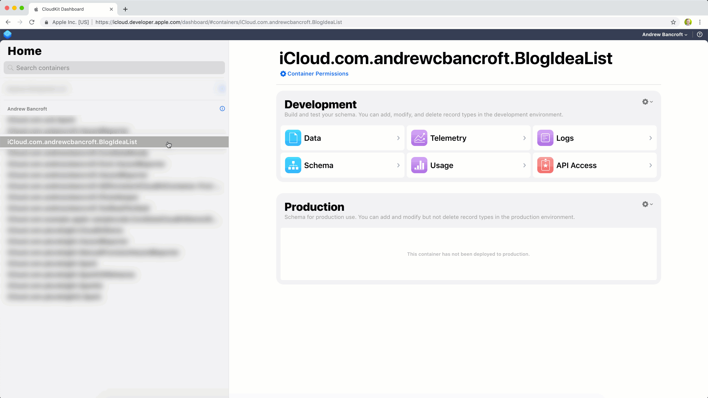
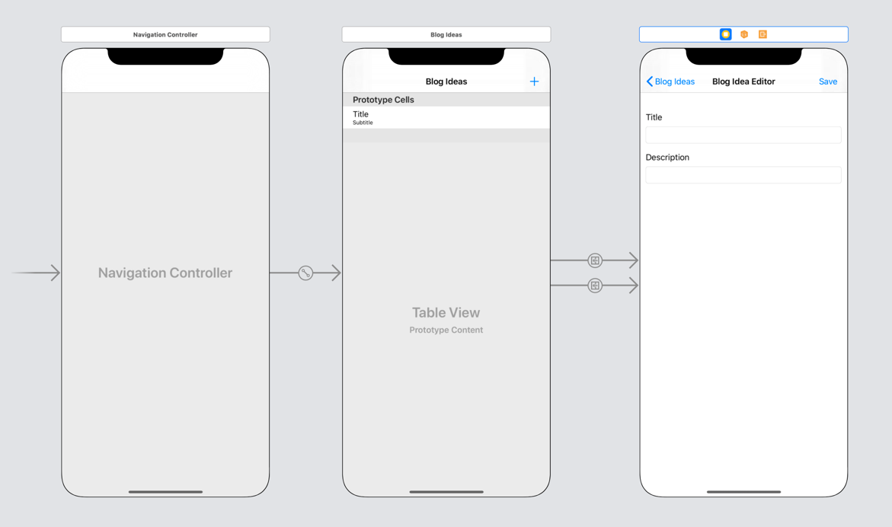
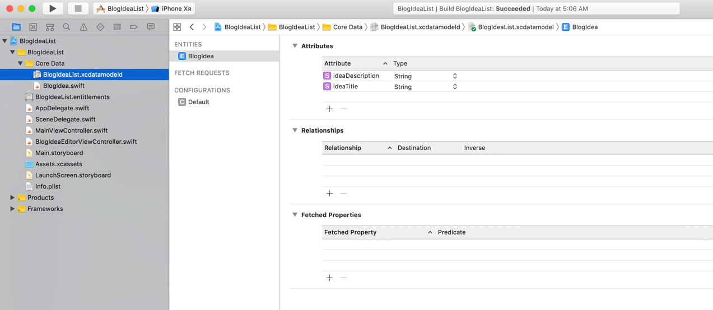
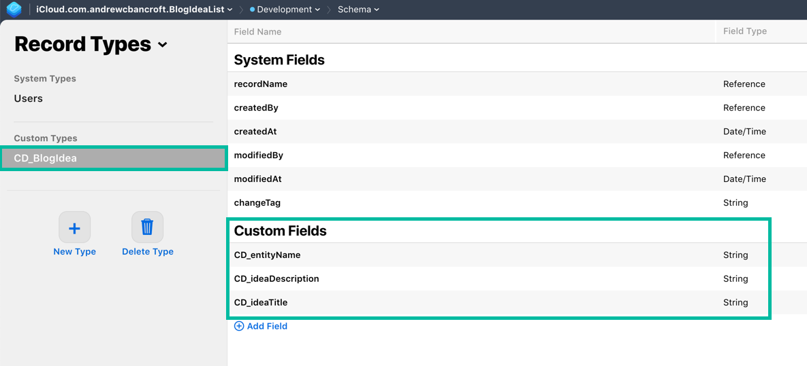

I am the author of Core Data, CloudKit, and the Big Picture of Data Persistence on iOS on Pluralsight.
Deepen your understanding by watching the courses!
Getting Started With NSPersistentCloudKitContainer
What is it like to sync data from Core Data to iCloud using Apple's new NSPersistentCloudKitContainer? Here I provide an example project and walkthrough for saving and syncing a single Core Data Entity with CloudKit using this new class.
First Things First
- In order to use
NSPersistentCloudKitContainerin your app, you need to be targeting iOS 13+. - The CloudKit syncing portion only works on physical devices (not in the simulator). That being the case, you’ll need two or more devices running the app and using the same iCloud account to fully test things out and make sure syncing and data merging behavior works as you’d expect it to.
The goal of this walkthrough is to provide you with a fully-working example of performing and synchronizing create, read, update, and delete operations using NSPersistentCloudKitContainer.
It’s the project I wish I had for referencing the basics…something beyond the out-of-the-box, saving a list of timestamps that comes pre-implemented with a Master-Detail app, but something less complicated than Apple’s example project which ends up having several relationships involved in the data model, extra features configured on the persistent container, etc.
I offer it to you as reference as well – I hope it helps!
Setup
The easiest way to get stareted with NSPersistentCloudKitContainer is to enable Core Data and CloudKit when you start your new project.

The Core Data + CloudKit Stack
Xcode provides the Core Data Stack code you need in the usual location: in the AppDelegate.swift file.
There’s one notable difference though. Instead of initializing a normal NSPersistentContainer, Xcode uses the new NSPersistentCloudKitContainer (this is why it’s important to check the CloudKit box when you create your app).

What About Existing Apps?
If you’ve got an existing app that’s using a “regular” NSPersistentContainer, you can change it to NSPersistentCloudKitContainer and continue on from there!
If you’re not using NSPersistentContainer with your app yet, my guide on how to migrate may be of help!
Adding Capabilities
While Xcode auto-generates the Core Data + CloudKit stack for you, it does not enable iCloud for you.
To enable full functionality, you need to go to your Xcode project settings.
Then click on the Signing & Capabilities section and add the iCloud and Background Modes capabilities.
Check the CloudKit checkbox, and the Remote Notifications checkbox.
Add iCloud + CloudKit

Add Background Modes + Remote Notifications

What About Registering for Remote Notifications?
The beauty of NSPersistentCloudKitContainer is that it handles all the work required to listen for and respond to remote notifications.
This means that data saved locally on one device gets pushed up to iCloud synced back down to another device automatically.
What About My Data Model in iCloud?
When you enable the iCloud capability for your app, Xcode automatically creates a container for your app in the CloudKit Dashboard.
It does not, however, create a schema that matches your Core Data model…yet. This is a setting you can toggle, but the default behavior is to “lazily” create the schema as people create objects and save them to your persistent store.

Walking Through the Example Project
WWDC always gets the blog ideas flowing through my brain, so this little app’s theme is “saving a list of blog ideas”, both locally, and across my devices using NSPersistentCloudKitContainer.
User Interface
The user interfacde allows you to perform the essential operations of a data-driven app: create, read, update, and delete objects.

Data Model
The data model for this is basic: a single BlogIdea Entity with two String properties: ideaTitle and ideaDescription.

No relationships or extra configuration options… just one Entity to keep it a basic reference-able project.
The BlogIdea NSManagedObject subclass is implemented like this:
|
|
View Controllers
There are two view controllers that come with this example:
MainViewController
|
|
|
|
Understanding the Default Sync Behavior
At this point no additional configuration has happened. The Core Data stack is the unmodified Xcode generated code, and the fetched results controller is hooked up to the managed object context for your app, ready to fetch Blog Ideas and help get them into the table view.
If you open the project, build and run on two devices, and begin adding Blog Ideas, updating them, deleting them, etc. what happens?
The first observation is that…things…don’t…seem to be working…
…At least not how I thought they would.
I expected my Blog List view to automatically update in response to changes made on my other device, buuut… nope. Thankfully it’s an “easy” fix.
Reflecting Changes in the UI
Wherever you access your app’s persistent CloudKit container to grab the viewContext, you need to set the automaticallyMergesChangesFromParent property to true.
I initialize the container in the SceneDelegate, so check out the code exerpt below to see where that gets set.
SceneDelegate.swift
|
|
Making this one-line change will enable the app (which is supported by NSFetchedResultsController) to update the UI in response to remote data changes…
eventually
It can be slow (anywhere from 5 to 15 seconds). But it will eventually update.
Revisiting the iCloud Schema
Once you save an object, the schema within the iCloud Dashboard will update to reflect the properties you designed in your Core Data Model.

Where’s My Data?
If you attempt to query for BlogIdea records in any of the iCloud databases provisioned for your app, you won’t find any.
Why?
That’s because Apple fully manages a hidden Zone for your Core Data + CloudKit data. It was veeeery briefly mentioned in the WWDC 2019 presentation (right about 10:50 if you’re watching).
Wrapping Up
My hope was to provide you with a fully-working example of performing and synchronizing create, read, update, and delete operations using NSPersistentCloudKitContainer.
Check out the GitHub repo, leave a comment, or @ me on Twitter to continue the conversation from here!
comments powered by Disqus